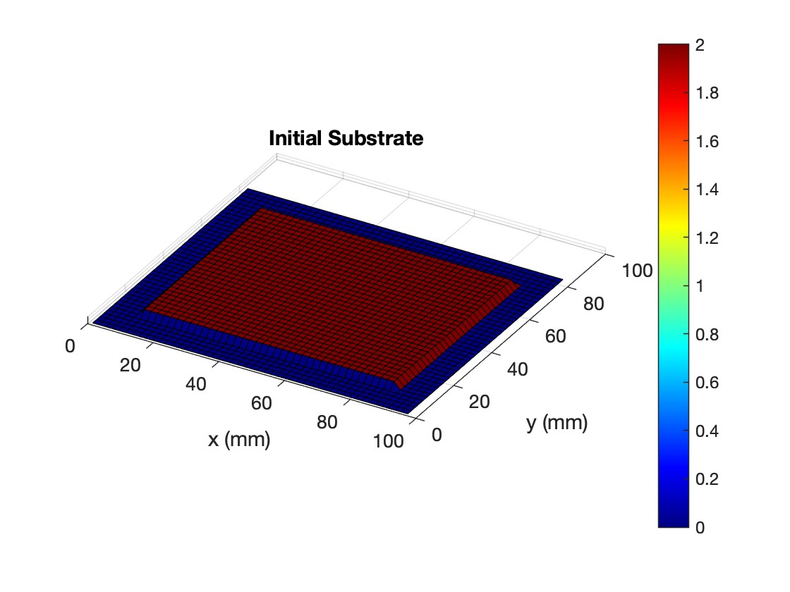
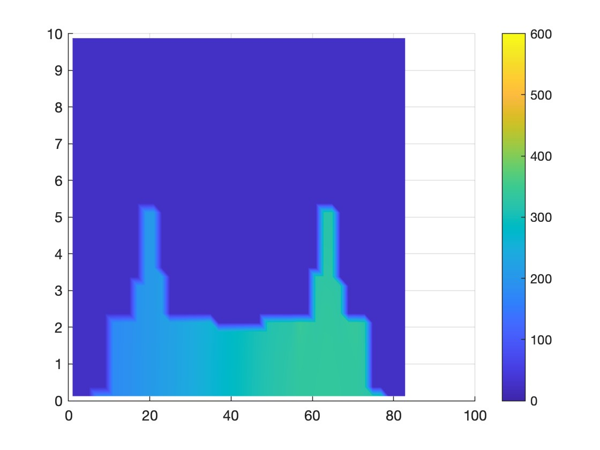

objective: to simulate the thermal behavior of material deposition by impinging jets during the cold spray additive manufacturing process

for jj = 1:stsize
Told = T; mold = m;
% nozzle positions updating per timestep
nx = (snozp(jj,1)/1000) - path_centerX + (x2/2);
ny = (snozp(jj,2)/1000) - path_centerY + (y2/2);
% TAWI CALCULATION
Taw = zeros(xsize,ysize) + Troom;
for i = 1:xsize
for j = 1:ysize
r = sqrt( ((nx-cx(i))^2) + ((ny-cy(j))^2) );
for k_p = 1:TN
if r >= Tofr(k_p,1)
Taw(i,j) = Tofr(k_p,2);
end
end
if Taw(i,j) < Troom, Taw(i,j) = Troom; end
end
end
% MASS INPUT (GAUSSIAN)
[CXM, CYM] = ndgrid(cx, cy);
m_in = (dt*mdot).*( (0.5.*(1+erf((CXM-nx-mumx)./(sigmx*sqrt(2)))))...
- (0.5.*(1+erf((CXM-nx-dx-mumx)./(sigmx*sqrt(2))))) )...
.*( (0.5.*(1+erf((CYM-ny-mumy)./(sigmy*sqrt(2)))))...
- (0.5.*(1+erf((CYM-ny-dy-mumy)./(sigmy*sqrt(2))))) );
relr = sqrt((CXM-nx).^2 + (CYM-ny).^2);
m_in(relr>lim) = 0;
% PHYSICS LOOP
for i = 1:xsize
for j = 1:ysize
madd = m_in(i,j);
Taw_local = Taw(i,j);
for k = 1:zsize
% Mass Accumulation Logic
mloccap = mcap - mold(i,j,k);
if (k == 1 && mloccap > 0)
if madd <= mloccap, m(i,j,k) = m(i,j,k) + madd; madd = 0;
else, m(i,j,k) = m(i,j,k) + mloccap; madd = madd-mloccap; end
elseif (mloccap>0 && m(i,j,k-1) == mcap)
if madd <= mloccap, m(i,j,k) = m(i,j,k) + madd; madd = 0;
else, m(i,j,k) = m(i,j,k) + mloccap; madd = madd-mloccap; end
end
% THERMAL GUARD (Protect against divide by zero/NaN)
if m(i,j,k) > 1e-18
if m(i,j,k) == mold(i,j,k)
Tinit = Told(i,j,k); Simpact = 0;
else
massin = m(i,j,k)-mold(i,j,k);
Tinit = (mold(i,j,k)*Told(i,j,k)+massin*Tpi)/(m(i,j,k));
mdotin = massin/dt;
Simpact = 0.793*(0.5*mdotin*(Vpi^2))*(1-(Tpi-Troom)/(Tmm-Troom));
end
mrat = m(i,j,k)/mcap;
% Conduction/Convection Boundaries
if i==1, Ql=0; hL=0; elseif m(i-1,j,k)==0, Ql=-h*Ai*(Tinit-Taw_local); hL=h; else, Ql=-km*mrat*Ai*(Tinit-Told(i-1,j,k))/dx; hL=km/dx; end
if i==xsize, Qr=0; hR=0; elseif mold(i+1,j,k)==0, Qr=-h*Ai*(Tinit-Taw_local); hR=h; else, Qr=-km*mrat*Ai*(Tinit-Told(i+1,j,k))/dx; hR=km/dx; end
if j==1, Qf=0; hF=0; elseif mold(i,j-1,k)==0, Qf=-h*Aj*(Tinit-Taw_local); hF=h; else, Qf=-km*mrat*Aj*(Tinit-Told(i,j-1,k))/dy; hF=km/dy; end
if j==ysize, Qbk=0; hBK=0; elseif mold(i,j+1,k)==0, Qbk=-h*Aj*(Tinit-Taw_local); hBK=h; else, Qbk=-km*mrat*Aj*(Tinit-Told(i,j+1,k))/dy; hBK=km/dy; end
if k==1, Qbt=0; hBT=0; elseif mold(i,j,k-1)==0, Qbt=-h*Ak*(Tinit-Taw_local); hBT=h; else, dist=(dz/2)+0.5*dz*mrat; Qbt=-km*Ak*(Tinit-Told(i,j,k-1))/dist; hBT=km/dist; end
if k==zsize, Qt=0; hT=0; elseif mold(i,j,k+1)==0, Qt=-h*Ak*(Tinit-Taw_local); hT=h; else, mrattop=m(i,j,k+1)/mcap; dist=dz/2+mrattop*dz/2; Qt=-km*Ak*(Tinit-Told(i,j,k+1))/dist; hT=km/dist; end
hAeq2 = hL*Ai*mrat+hR*Ai*mrat+hF*Aj*mrat+hBK*Aj*mrat+hBT*Ak+hT*Ak;
if mrat >= 0.25
T(i,j,k) = Tinit + dt*(1/(m(i,j,k)*Cpm))*(Simpact + (Ql+Qr+Qf+Qbk+Qbt+Qt));
else
Teq = Taw_local;
T(i,j,k) = Teq + (Tinit - Teq) * exp(-dt*abs(hAeq2)/(Cpm*m(i,j,k)));
end
% Update Surface Tracker
if k == zsize || mold(i,j,k+1) == 0
Tsurf(i,j) = T(i,j,k);
surfpos(i,j) = cz(k)+dz*m(i,j,k)/mcap;
end
else
T(i,j,k) = Told(i,j,k);
end
end
end
end
